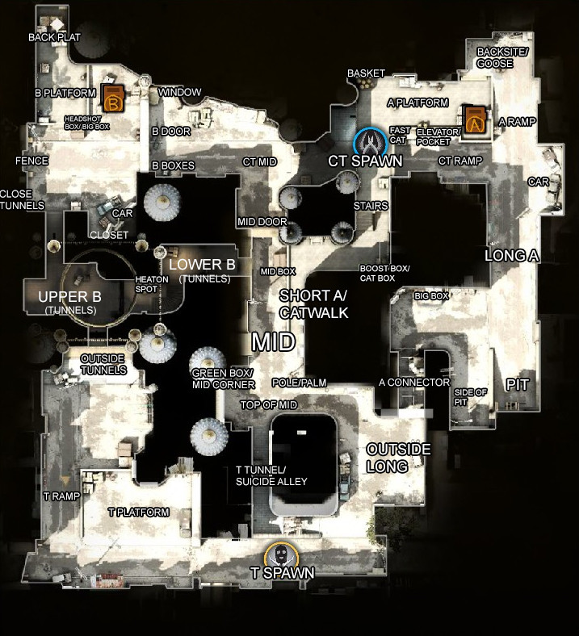

This page is all about the maps in CS:GO
This page is dedicated to the different maps of CS:GO including the current operation
 CS:GOTips Maps
CS:GOTips MapsThis page is dedicated to the different maps of CS:GO including the current operation
This map has been around since Counter-Strike 1.6. over the years, valve has made tweaks to the map while also upgrading its graphics, but it has relatively stayed the same.
CT and T spawn on opposite side of the map, while CT have the advantage of being close to the bomb sites. Ts can come from five different spots, two different ways to B site
and 3 different ways to A site.

Ading moe mps an sustaince sewn.